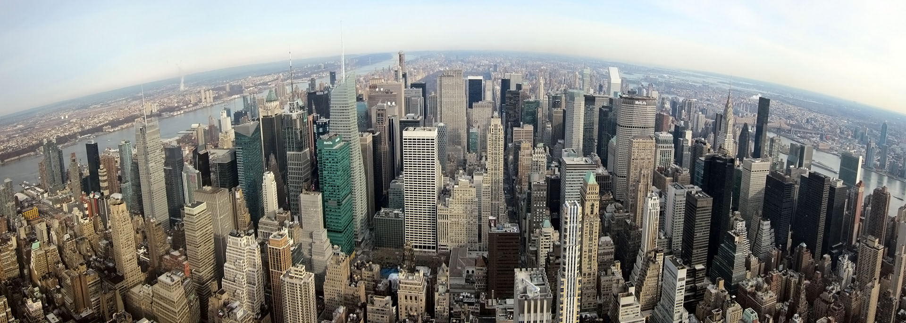

Amerika günlükleri: New York
January 4, 2013
21 Aralık 2012 sabahı insanlar kıyametten kaçış planları yaparken ben de İstanbul'dan New York'a gitmek üzere Atatürk Havalimanında yerimi aldım. Kıyamet koparsa en azından uçak Şirince'ye iniş yapar diye rahattım. Şaka bir yana gerçekten bugün uçak biletlerinin ucuz olması ile asılsız kıyamet söylentileri arasında bir ilişki olabilir :).
Jetlag yaşamamak için uçakta uyumak üzere gece hiç uyumadım, yolculuktan önceki iki gün uyku ve yemek takvimimi aşamalı olarak NY saatine göre ayarladım. Zaman farkı nedeniyle 11 saat süren yolculuktan sonra aynı gün öğlene doğru NY'a ulaştım.
University of Texas at Austin'de bahar dönemi başlamadan önce NY'ta bir hafta kadar bir zamanım oldu. Amerika'da geçen yaz İstanbul'da tanıştığım bir arkadaşın ailesi beni misafir etti. Oldukça misafirperver ve sevecen bir aileydi bana ailenin bir üyesi gibi davrandılar. Genel olarak Amerikanlar hakkındaki ilk izlenimlerim oldukça olumlu. Avrupadaki bir kaç olumsuz deneyimimin aksine herhangi bir ırkçılık, ayrımcılık veya yabancıyı dışlama gibi bir durumla karşılaşmadım. İnsanlar oldukça dost canlısı ve dil konusunda da yeterliyseniz burada kendinizi evinizde gibi hissedebiliyorsunuz.
Empire State Binası, Brooklyn Köprüsü, Central Park, Özgürlük Heykeli, Times Meydanı gibi New York'un turistik mekanlarından fazla bahsetmeme gerek yok sanırım bu konuda yazılmış fazlaca yazı zaten internette mevcut. Bunların dışında normalde çok müze gezen bir insan olmamama rağmen Amerikan Doğa Tarihi Müzesi (American Museum of Natural History) çok ilgimi çekti. Hall of Human Origins ve Hall of Biodiversity bölümleri en çok ilgilendiğim salonlar oldu, özellikle doğa bilimleriyle ilgiliyseniz ve New York'a yolunuz düşerse kesinlikle tavsiye ederim.
Yurtdışı, Amerika